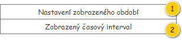
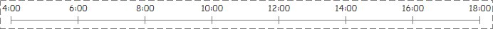

Stručný popis
Časová osa s možností nastavení zobrazeného detailu.
Ve výchozím stavu je určena pro časové rozmezí jednoho dne.
Uživatelské rozhraní
Rozložení
Drátový diagram

Přehled UI komponent
| Callout | Skupina |
|---|---|
| 1 | Nastavení zobrazeného období |
| 2 | Zobrazený časový interval |
Nastavení zobrazeného období
První část časové osy slouží k nastavění intervalu, který bude zobrazen. Ve výchozím stavu je zobrazeno celé období. Posunutím krajních mezí dojde ke změně právě zobrazeného intervalu. Ve výchozím nastavení je možné krajní meze posouvat krokově, kde délka kroku je 30 minut.
Zobrazený časový interval
Po nastavení zobrazeného období dojde k aktualizaci časové osy zobrazeného intervalu.

Zobrazené rozestupy se pak automaticky přizpůsobují dle celkové šířky časové osy, a to následovně:
- Minimální vzdálenost rozestupu je 30 minut.
- Zobrazené hodnoty se nesmí překrývat.
Náhled
Po sloučení jednotlivých částí časové osy dojde k vytvoření ovládacího prvku.